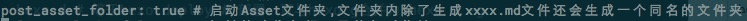

Hexo博客搭建的基础大致流程为：
- 安装Node.js → 安装Hexo → 本地测试运行 → 安装及配置主题 →安装Git → 注册github与coding并创建pages仓库 → 部署
- Node.js和git的安装大家自己去网上搜下，相关的文章很多
Hexo安装和配置
Hexo安装
在终端执行以下命令通过npm安装Hexo(这里有个前提是你的电脑node环境已经装好)
npm install -g hexo-cli
Hexo初始化
Hexo安装完成后,先提前建好一个文件夹用来做我们博客项目的文件夹。比如我这里在用户主目录下建了一个hexo文件夹，里面建了一个blog文件夹。
在blog文件夹中打开终端，或者通关cd命令进入blog这个目录
cd hexo/blog

执行命令：
hexo init # hexo会在当前文件夹建立网站所需要的所有文件
npm install # 安装依赖模块
新建完成后，blog文件夹目录结构如下：
1 | . |
启动hexo本地站点，并开启调试模式（即加上 –debug），整个命令是 hexo s --debug。 在服务启动的过程，注意观察命令行输出是否有任何异常信息，如果你碰到问题，这些信息将帮助他人更好的定位错误
hexo s -d # 等同于hexo server –debug，在本地服务器运行
然后打开浏览器输入http://localhost:4000。可以看到如下界面：
新建页面和文章
1 | hexo new "title" # 生成新文章：\source\_posts\title.md |
生成文章或页面的模板放在博客文件夹根目录下的 scaffolds/ 文件夹里面，文章对应的是 post.md ，页面对应的是page.md，草稿的是draft.md
编辑文章
打开新建的文章\source_posts\postName.md，其中postName是hexo new “title”中的title
1 |
|
MD文章编辑
如果你对MD语法不熟悉，推荐你去马克飞象使用它的在线网页编辑，可以实现一边打字一边查看效果，很方便。
地址：https://maxiang.io/
我这里用的mac的MacDown编辑，类似的软件还有 Mou 、Typora
到这里hexo就算是安装好了，接下来就是一些详细的配置了。
常用命令总结
1 | hexo init [folder] # 初始化一个网站。如果没有设置 folder ，Hexo 默认在目前的文件夹建立网站 |
博文插入图片
1.首先确认站点配置文件_config.yml 中有 post_asset_folder:true。
Hexo 提供了一种更方便管理 Asset 的设定：post_asset_folder
当您设置post_asset_folder为true参数后，在建立文件时，Hexo
会自动建立一个与文章同名的文件夹，您可以把与该文章相关的所有资源都放到那个文件夹，如此一来，您便可以更方便的使用资源。

2.在hexo的目录下执行npm install hexo-asset-image --save
3.完成安装后用hexo新建文章的时候会发现_posts目录下面会多出一个和文章名字一样的文件夹。图片就可以放在文件夹下面。
比如我这里新建一篇文章 执行：hexo new "Hexo使用入门" 就会在我的source/_posts目录下生成 Hexo使用入门.md 文件 和 Hexo使用入门 文件夹，将我们这篇文章要用到的图片放入该文件夹就行了

需要引入某张图片，就这样写 
这里有一个坑，如果同时使用了hexo-abbrlink插件做了链接持久化的话,引用图片就需要这样写：{% asset_img slug [title] %} , 比如上面的引用5.png，就写成
{% asset_img 5.png %}
备注：这种方式本地直接打开文件显示不了，本人还是推荐使用图床的方式存图片，方便放在其他博客，还可以减少请求压力。阿里云oss、七牛云、腾讯云cos 等等还有很多，只是这3个大品牌你值得拥有～～～（空了写教程，其实使用很简单的）
Hexo Next主题安装与配置
在终端窗口下，定位到 Hexo 站点目录下。使用 Git checkout 代码：
git clone https://github.com/iissnan/hexo-theme-next themes/next
编辑站点配置文件 _config.yml ，找到 theme 字段，并将其值更改为 next。
theme: next # 当前主题名称。值为false时禁用主题
这里如果git clone太慢的话，可以看看 git clone太慢解决方式
到此，NexT 主题安装完成。下一步我们将验证主题是否正确启用。在切换主题之后、验证之前， 我们最好先使用 hexo clean 来清除 Hexo 的缓存。
主题设定
选择 Scheme
Scheme 是 NexT 提供的一种特性，借助于 Scheme，NexT 为你提供多种不同的外观。同时，几乎所有的配置都可以 在 Scheme 之间共用。目前 NexT 支持三种 Scheme，他们是：
- Muse - 默认 Scheme，这是 NexT 最初的版本，黑白主调，大量留白
- Mist - Muse 的紧凑版本，整洁有序的单栏外观
- Pisces - 双栏 Scheme，小家碧玉似的清新
Scheme 的切换通过更改 主题配置 文件themes/next/_config.yml，搜索 scheme 关键字。 你会看到有三行 scheme 的配置，将你需用启用的 scheme 前面注释 # 去除即可。
设置站点首页不显示文章全文
打开 主题配置文件 _config.yml 文件，注意不是站点配置文件，该文件在对应主题文件夹下。找到如下：
1 | # Automatically Excerpt. Not recommend. |
把这里的false改为true就可以了在首页启动显示文章预览了，length是显示预览的长度。
这里我们可以通过在文章使用标志来精确控制文章的摘要预览，比如这篇文章就是在这个段落的末尾添加了该标志，所以本文在首页的预览就会显示到这个段落为止。
强烈推荐使用该标志来控制文章的摘要预览，因为这种方式可以让摘要也按照css文件中的样式来渲染。如果使用了自动摘要的功能，你会发现文章摘要是一大团没有样式的文本，很是难看。
其他的文章配置（字数统计、阅读时长）
1 | # --------------------------------------------------------------- |
上面的字数统计和估计阅读时长需要安装hexo-wordcount插件，执行
npm install hexo-wordcount –save
添加链接持久化
hexo默认的链接是http://xxx.yy.com/2013/07/14/hello-world这种类型的，这源于站点配置文件_config.yml里的配置:permalink: :year/:month/:day/:title/.这种默认配置的缺点就是当我们创建的博文名包含中文的名的时候，url链接地址经常会变成一串很长的难以理解的字符串，不利于博文的链接分享，以及搜索引擎搜索，另外就是年月日都会有分隔符。我们可以让url链接持久化来解决这个问。
安装
hexo-abbrlink插件npm install hexo-abbrlink –save
修改站点配置文件 _config.yml
permalink: post/:abbrlink.html
添加 abbrlink:
1 | permalink: post/:abbrlink.html |
添加百度分享
修改 主题配置文件 _config.yml
1 | baidushare: |
添加站内搜索功能
安装 hexo-generator-search 插件
$ npm install hexo-generator-search –save
配置站点文件_config.yml:
1
2
3
4# 站内搜索
search:
path: search.xml
field: post配置主题文件_config.yml:
1
2local_search:
enable: true
添加阅读次数统计
参考 这里 写得很详细（主要还是因为我懒）
还有一些修改没写。留着有时间再来写吧。。。
添加百度统计，codingpage、来必应评论、标签页、打赏、原创声明、存
同步到Github，域名解析
参考链接：